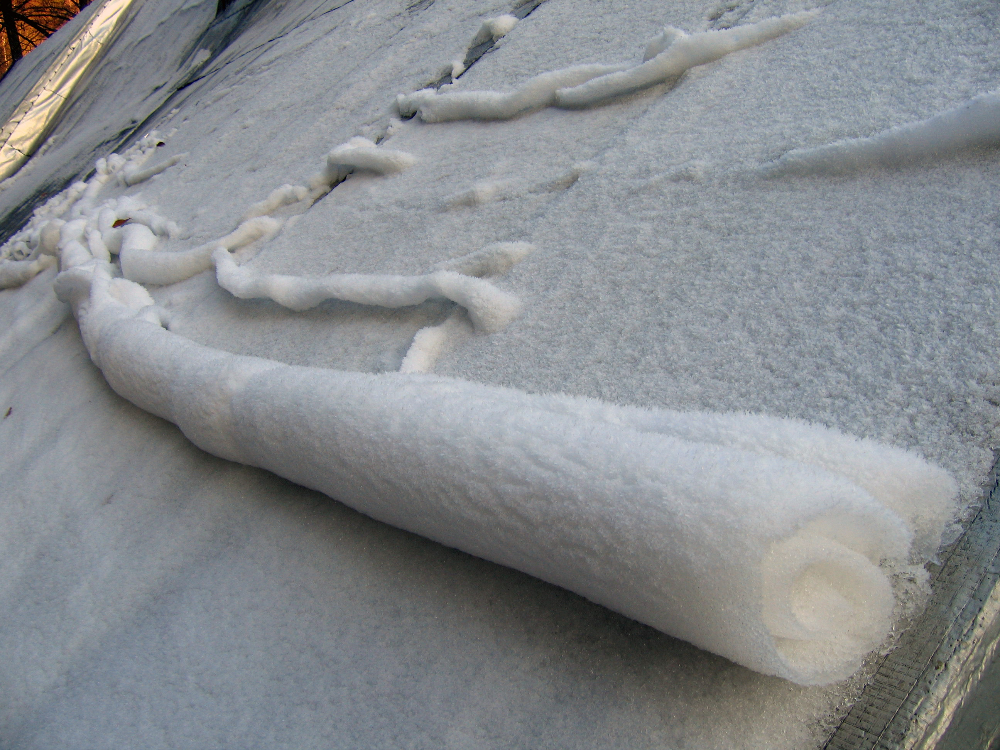

	

		<?php
    // Include the menu
    include '../../../menu.php';

    // Get the current URL of the executing script
    $currentUrl = $_SERVER['PHP_SELF'];

    // Extract the directory path from the URL
    $menuDirectory = rtrim(dirname($currentUrl), '/'); // Remove trailing slashes

    // Function to convert relative URLs to absolute URLs based on the menu directory
    function makeAbsoluteUrl($url, $menuDir) {
        if (strpos($url, '/') === 0) {
            return $url; // URL is already absolute
        } else {
            return $menuDir . '/' . $url;
        }
    }
    ?>

    <!-- Modify the links in the menu using the $menuDirectory variable -->
    <script>
        document.addEventListener('DOMContentLoaded', function() {
            const menuLinks = document.querySelectorAll('#main-nav-wrap a');
            const menuDirectory = '<?php echo $menuDirectory; ?>';

            for (const link of menuLinks) {
                link.href = makeAbsoluteUrl(link.href, menuDirectory);
            }
        });
    </script>

			


	<!-- content
   ================================================== -->
	<section id="content-wrap" class="blog-single">
		<div class="row">
			<div class="col-twelve">

				<article class="format-standard">

					<div class="content-media" style="position:relative;">
						<div class="post-thumb">
							
						</div>
						<div class="logocam">
							<p><i style="position:absolute; margin-left:2px; padding-top:6.5px;"><a style="color:inherit;" href="https://commons.wikimedia.org/wiki/File:Rolling_snow.JPG?uselang=fr">Petr Dlouhy</i></a></p>
						</div>
					</div>

					<div class="primary-content">

						<h1 class="page-title">les Rouleaux de Neige</h1>

						<ul class="entry-meta">
							<li class="date">Décembre-Janvier 2022-2023</li>
							<li class="cat"><a href="">Température</a><a href="">Phénomène</a></li>
						</ul>

						<p class="lead">Si en pleine randonnée dans une <a href="#regpol" class="smoothscroll lienimg">
							région polaire</a> vous voyez un champ remplis d’étranges
							rouleaux blancs, ne les mangez surtout pas, ce ne sont pas des gâteaux roulés au chocolat
							blanc. </p>

						<p class="drop-cap">L'être humain n’en est pas le pâtissier. Alors, est-ce que c’est E.T qui l’a
							cuisiné ? Non, notre ami venu d'ailleurs n’est pas le créateur de ces formes étranges . En
							effet ce sont des rouleaux de neige. Comme l’Américain est “ plus stylé” on va utiliser son
							appellation américaine, les snow rollers. Ces formations neigeuses présentes en de rares
							occasions dans ces régions très froides du globe naissent dans des conditions
							météorologiques très spéciales.</p>

						<p class="#">Dans un premier temps une couche de glace doit se former sur le sol , puis une
							seconde couche doit la recouvrir. Si la taille de cette dernière est de plus de 10 cm, le
							snow rollers est irréalisable, le poids de l'ensemble étant trop élevé pour permettre la
							formation d'un rouleau. </p>

						<p></p>

						<p class="lead">Dans des cas encore plus rares, la formation peut se faire sans la glace, mais la
							température doit être d'environ 2°C pour maintenir quand même une cohésion 2 au sein de la
							couche de neige .</p>

						<p class="drop-cap">Quel que soit le cas de figure, l'humidité de l’air doit être relativement
							élevée. Cela arrive souvent lors du passage d’un <a href="#frontfroid" class="smoothscroll lienimg">front froid</a>. Pour donner la forme de
							rouleau à notre neige, un vent entre 40 et 50 km/h est idéal. C'est en effet le vent qui
							pousse la neige à se tordre pour lui donner cette forme de rouleau. Au- delà de 70km/h la
							neige s’envole et forme une congère (amas de neige formé par le vent). </p>

						<p>Généralement les rouleaux se forment en plein jour et gèlent avec le froid de la nuit, leur
							forme reste alors jusqu'à la fonte de la glace. Lorsque cette étape échoue, il y a une
							possibilité d'effondrement rendant inexistant le trou central. Les pentes montagneuses
							favorisent la création de rouleaux plus grands.
							Souvent d'un diamètre de 30 à 40 cm, certains rouleaux atteignent 90 cm de diamètre.</p>

						<p id="regpol" class="#"><center></center>
						<div class="drop-cap">Ce sont les régions
							polaires, les régions les plus froides sur Terre, situées entre les pôles et les cercles
							polaires (Canada, Russie, nord de l'Europe, Alaska …).</div>
						</p>

						<p id="frontfroid" class="#"><center></center>
						<div class="drop-cap">Le front froid se
							produit lorsqu’une masse d’air froid s’avance vers une masse d’air chaud. L’air chaud
							s'élève, refroidit et la vapeur d’eau se condense. </div>
						</p>

						<ul style="list-style:none; font-size:small; padding-top:7%;">Sources :
                            <li><a
                                href="https://www.futura-sciences.com/planete/actualites/meteorologie-phenomene-meteo-extraordinaire-rouleaux-neige-101913/" style="color:inherit;"><i style="font-size:small;">https://www.futura-sciences.com/planete/actualites/meteorologie-phenomene-meteo-extraordinaire-rouleaux-neige-101913/</i></a></li>
                            <li><a
                                href="https://fr.wikipedia.org/wiki/Rouleau_de_neige" style="color:inherit;"><i style="font-size:small;">https://fr.wikipedia.org/wiki/Rouleau_de_neige</i></a></li>
                            <li><a
                                href="https://www.techno-science.net/glossaire-definition/Rouleau-de-neige.html" style="color:inherit;"><i style="font-size:small;">https://www.techno-science.net/glossaire-definition/Rouleau-de-neige.html</i></a></li>
                        </ul>

						<p class="tags">
							<span>Tags :</span>
							<a href="#">temperature</a><a href="#">phenomène</a>
						</p>

						<div class="author-profile">
							

							<div class="about">
								<h4><a href="#">Simon LRM</a></h4>

								<p>A reseigner.</p>

								<ul class="author-social">
									<li><a href="#">Facebook</a></li>
									<li><a href="#">Twitter</a></li>
									<li><a href="#">GooglePlus</a></li>
									<li><a href="#">Instagram</i></a></li>
								</ul>
							</div>
						</div> <!-- end author-profile -->

					</div> <!-- end entry-primary -->

					<div class="pagenav group">
						<div class="prev-nav">
							<a href="Flocons_de_neige.html" rel="prev">
								<span>Précédent</span>
								Les Flocons de Neige et leur Géométrie
							</a>
						</div>
						<div class="next-nav">
							<a href="Oeufs_de_glace.html" rel="next">
								<span>Suivant</span>
								Les Oeufs de glace
							</a>
						</div>
					</div>

				</article>


			</div> <!-- end col-twelve -->
		</div> <!-- end row -->


		<!-- footer
   ================================================== -->
		<footer>

			<div class="footer-main">

				<div class="row">

					<div class="col-four tab-full mob-full footer-info">

						<h4>A Propos</h4>

						<p>
							Ce site est un projet ayant pour but de mettre en avant nos articles, nos parutions le plus
							possible sans avoir de pubs ni de dérangements particuliers,
							bonne lecture
						</p>

					</div> <!-- end footer-info -->

					<div class="col-two tab-1-3 mob-1-2 site-links">

						<h4>Liens autres</h4>

						<ul>
							<li><a href="http://lyceeernestperochon.cc-parthenay.fr/">Site du Lycée</a></li>
							<li><a href="../../../about.html">A Propos de nous</a></li>
							<li><a href="../../../team.html">L'équipe</a></li>
							<li><a href="https://fr.calameo.com/read/00697949092f1ebdab474">Dernière Parution (PDF) </a>
							</li>
							<li><a href="#"></a></li>
						</ul>

					</div> <!-- end site-links -->

					<div class="col-two tab-1-3 mob-1-2 social-links">

						<h4>Réseaux sociaux</h4>

						<ul>
							<li><a href="https://www.instagram.com/club_zoomsurlessciences/">Instagram</a></li>
							<li><a href="https://github.com/just-jerem/just-jerem">Github</a></li>
							<li><a href="#">Dribbble</a></li>
							<li><a href="#">Google+</a></li>
							<li><a href="#">Instagram</a></li>
						</ul>

					</div> <!-- end social links -->

				</div> <!-- end footer-main -->

				<div class="footer-bottom">
					<div class="row">

						<div class="col-twelve">
							<div class="copyright">
								<span>© Copyright Abstract 2016</span>
								<span>Design by <a href="http://www.styleshout.com/">styleshout</a></span>
							</div>

							<div id="go-top">
								<a class="smoothscroll" title="Back to Top" href="#top"><i
										class="icon icon-arrow-up"></i></a>
							</div>
						</div>

					</div>
				</div> <!-- end footer-bottom -->

		</footer>

		<div id="preloader">
			<div id="loader"></div>
		</div>

		<!-- Java Script
   ================================================== -->
		<script src="../../../js/jquery-2.1.3.min.js"></script>
		<script src="../../../js/plugins.js"></script>
		<script src="../../../js/main.js"></script>

</body>

</html>